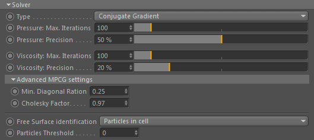
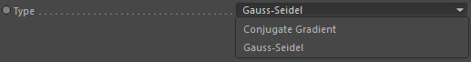

Solver

The solver determines quality and performance of the fluid dynamics. It is the core of any fluid motions
as it handles all the pressure calculations and makes the velocity field incompressible.
Therefore you should take special care of adjusting solver settings which is always a speed-quality trade-off.
Type

The type of solver to use.
Conjugate Gradient
This is a multi-preconditioned CG solver. It is robust and has the best quality even though it only runs single threaded.
Gauss-Seidel
This is a gauss-seidel relaxation solver. It is of lower accuracy but is multithreaded. Lower accuracy means it requires much more iterations to get a good result than the CG solver. Accuracy is worse than for CG.
Although the CG solver is only using 1 thread, it is qualitatively better than GS. This does NOT mean the quality of the simulation is better BUT it requires a lot less iterations before it solves the pressure problem!
So, even if GS is mutlithreaded, it may take more iterations to reach the desired precision.
Conclusively the runtime of the CG solver can be less even though it is only single-threaded. It really is up to the simulation task at hand to what you would choose. Sometimes it's simply better to have one mastermind than 10 good minds. ;)
So, even if GS is mutlithreaded, it may take more iterations to reach the desired precision.
Conclusively the runtime of the CG solver can be less even though it is only single-threaded. It really is up to the simulation task at hand to what you would choose. Sometimes it's simply better to have one mastermind than 10 good minds. ;)
Pressure: Max. Iterations
Solving for pressure is an iterative process. Here you can set the maximum amount of iterations.
Lower iterations result in lower quality motions but gets faster. Higher values improve incompressibility
and result in better quality (also over time).
The solver only takes as many iterations as it needs (based on Precision) but never more than Max. Iterations.
Pressure: Precision
This sets the precision of the solver (in other words, how many digits after the comma are considered).
The precision ranges from 1e-3 = 0.001 (0%) to 1e-16 = 0.0000000000000001 (100%).
Viscosity: Max. Iterations (Viscosity)
Solving for viscosity is an iterative process. Here you can set the maximum amount of iterations.
Lower iterations result in lower quality motions but gets faster. Higher values improve incompressibility
and result in better quality (also over time).
The solver only takes as many iterations as it needs (based on Precision) but never more than Max. Iterations (Viscosity).
Viscosity: Precision (Visosity)
This sets the precision of the solver (in other words, how many digits after the comma are considered).
The precision ranges from 1e-3 = 0.001 (0%) to 1e-16 = 0.0000000000000001 (100%).
Solver::Advanced
Min. Diagonal Ratio
This is a safety constant (in case of single cell line cases in the solver's matrix). See Bridsons Book on MIC Preconditioners for more information.
Cholesky Factor
A tuning constant. Controls the average weighting between IC (Incomplete Cholesky) and MIC (Modified Incomplete Cholesky) preconditioner.
0.97 is a good default. Gear this towards 1.0 the higher the resolution. Lower values make barely sense.
Free Surface identification
Defines what kind of algorithm to use to identify the free surface of a liquid body
and therefore which grid cells are identified as a fluid for solving the Navier-Stokes pressure problem.
Particles Threshold
The minimum amount of particles before a velocity grid cell is identified as a cell containing fluid.
Density Threshold
The minimum particle density (NOT density of matter. See Effex Scene::Global for an explanation) before a velocity grid cell is identified as a fluid cell.